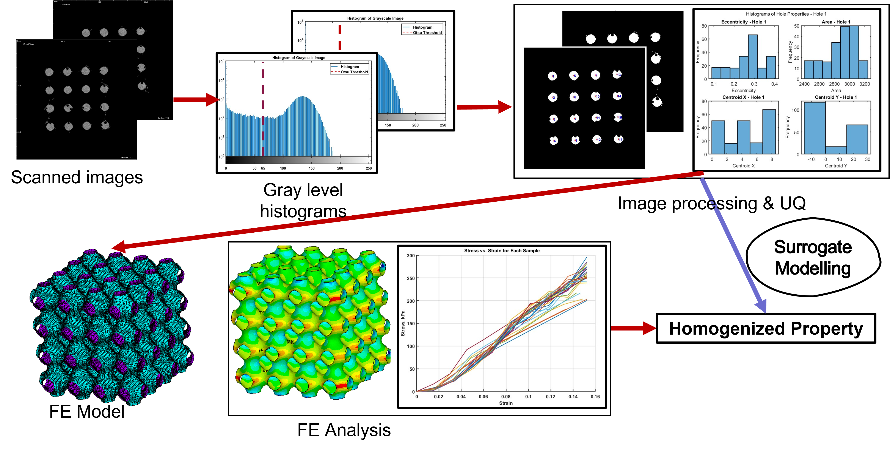
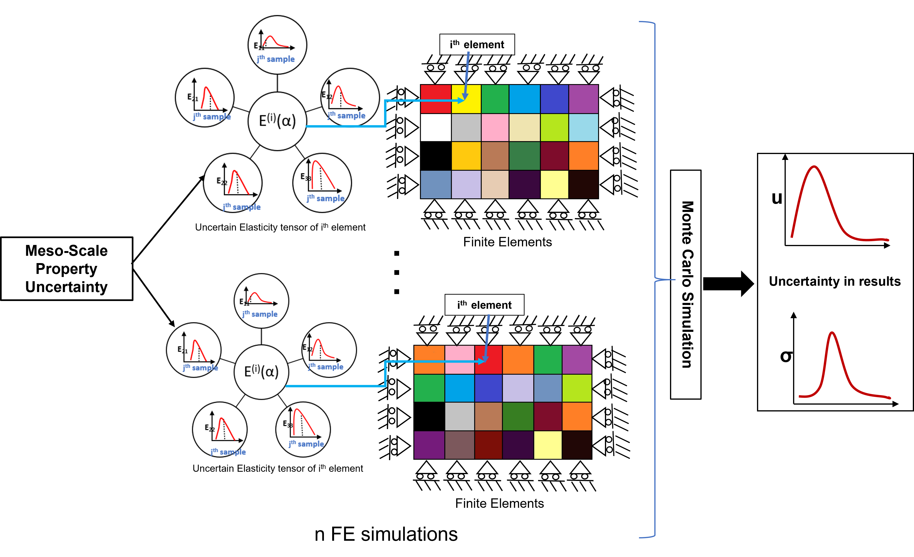
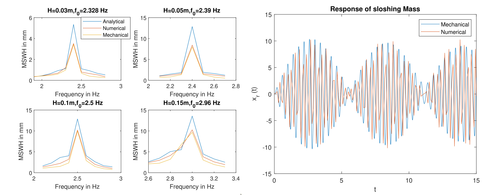

Projects:
PhD Research
Quantification of Fabrication-Related Uncertainties in TPMS Lattices with Image Processing and Surrogate Modeling
Fabrication processes introduce deviations in TPMS lattices, leading to significant deviations in their designed mechanical behavior. To address this, homogenization techniques are employed to link the effective properties of a unit-cell design to a set of design variables, enabling performance evaluation of the structure. Image processing algorithms are applied to CT-scanned images to parametrically quantify these deviations. This data is incorporated into finite element models to analyze the impact on mechanical behavior. A neural network (NN)-based surrogate model is then developed to predict homogenized mechanical properties as a function of the parametric representation, enhancing the quality of additively manufactured products and enabling the prediction of variability in mechanical characteristics.

Microstructural Uncertainty Propagation over Meso and Macro-Scale Mechanical Properties of Aerospace Metallic Alloys
The mechanical behavior of aerospace metals is pivotal for ensuring the structural integrity and reliability of aircraft components. However, the presence of inherent microstructural variability in these materials introduces uncertainties in their mechanical properties, significantly impacting the performance and safety of aerospace structures. In this project, we explored the relationship between microstructural uncertainty and its propagation on meso and macro-scale mechanical properties of a titanium-aluminum alloy, Ti-7Al. First, the uncertainty of meso-scale elastic moduli was evaluated by considering the inherent randomness of substitutional alloy atoms and the microstructural texture. Next, we developed a Finite Element (FE) framework for assessing the mechanical response of macro-scale structures, integrating micro-scale uncertainty into the FE model by sampling the elasticity modulus and Poisson's ratio for each element from the distribution of material properties at the meso-scale. By subjecting the FE model to varying microstructural properties, we analyzed the propagation of uncertainty on displacements and stresses across the structure.

Undergraduate Research
Undergraduate Thesis: Study of Slosh in Rectangular Tanks
-
The study focused on the motion of liquid, known as sloshing, in partially filled rectangular tanks subjected to lateral excitation.
It aimed to predict the maximum sloshing wave height (MSWH) and fluid forces on the tank walls using analytical, numerical, mechanical,
and experimental methods, all based on a linear model considering only the first mode. A two-degree-of-freedom mechanical model was
proposed, which effectively captured the beat phenomenon observed in sloshing, unlike other methods. Additionally, a mesh-independent
Lagrangian-based numerical model employing the Element Free Galerkin Method was developed to compute MSWH and forces accurately.
The results from all methods were validated against existing literature, demonstrating good agreement.
These approaches were intended to assist in the preliminary design of structures exposed to sloshing.

Other Research Projects:
- Aerospace Vehicle Design: Optimized structural factors and enhanced warhead capacity in an ICBM preliminary design.
- Multivariable Optimization: Created a C program using Genetic Algorithm and other optimization techniques for complex functions.
- Aerodynamics: Developed MATLAB code with Vortex Lattice Method to simulate lift and drag coefficients of an elliptic wing.
- Aerospace Structures: Analyzed functionally graded beams using MATLAB and solved Euler-Bernoulli beam equations.
Professional Experience
Scientist/Engineer ‘SC’ – Liquid Propulsion Systems Centre (LPSC), Indian Space
Research Organisation (ISRO)
Structural Design and Analysis
-
During my tenure, I was responsible for designing structures and tankages for liquid stages of Indian launch vehicles,
successfully delivering over eight hardware components. I proposed an innovative composite tank design with a common bulkhead,
which resulted in significant cost and mass reductions for the Semi-Cryogenic (SC) stage.
Additionally, I designed handling fixtures for the integration of the SC120 stage,
the heaviest stage ever built by ISRO. My work also included conducting vibration and thermo-structural analyses,
leading to over 40 recommended modifications across 17 systems to ensure safe and reliable operation. I led
the development of a deflection test scheme to qualify polyimide pipelines for cryogenic stages, with 14 pipelines successfully flown.
Environmental Test Facility Engineer
-
As an Environmental Test Facility Engineer, I performed harmonic, random, and shock response tests for more than eight components and subsystems of ISRO’s liquid stages.
I also developed a MATLAB routine to generate shock response spectra, which was used for qualifying components in the historic launch on October 23, 2022.
Post Flight Data Analysis
-
I examined vibration data from liquid stages of Indian launch vehicles to contribute to failure analysis
and mission optimization and proposed multiple improvements for enhancing the success of future missions.
Internships
Intern – Aerospace Department, Indian Institute of Space Science and Technology
(IIST)
-
The contact behavior in loaded gears varies significantly along the path of contact, leading to failures such as pitting, caused by repetitive
high contact stresses during gear mesh. Accurate evaluation of contact stress, influenced by friction variations along the path of action, is
essential but complex. This study uses 3D Finite Element Method (FEM) with a Lagrange multiplier algorithm to analyze contact stresses, incorporating friction coefficients.
A validated spur gear model based on Hertz’s contact theory was extended to helical gear pairs (5°, 15°, 25°), and results were used to develop a friction factor for stress calculations.
Intern – Experimental Aerodynamics Division, Vikram Sarabhai Space Centre (VSSC),
ISRO
-
I simulated water rocket trajectories under various environmental and operational conditions to optimize performance and reliability. This involved analyzing aerodynamic
and fluid dynamics aspects to predict and refine the rocket's flight path. Additionally, I designed and developed a leak-proof launch mechanism capable of withstanding
high-pressure conditions, ensuring consistent propulsion and improved safety during launches.
The mechanism was tested rigorously to validate its tolerance and effectiveness under different pressure levels, contributing to more efficient and reliable water rocket operations.